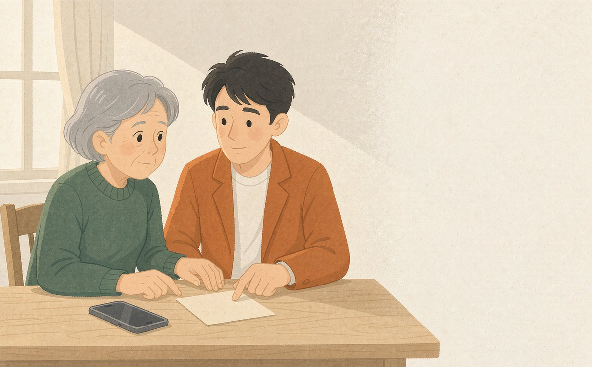
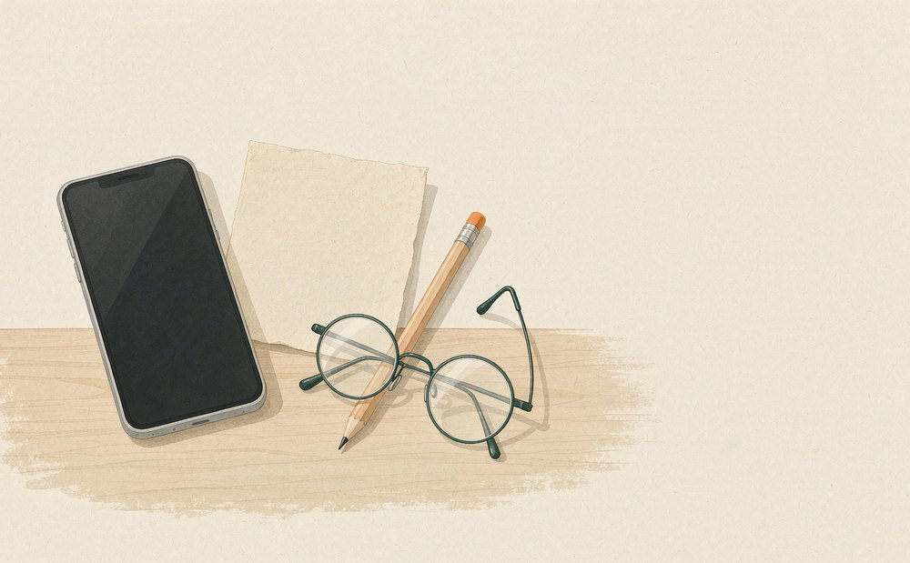

帮家人整理一条社区通知
时间、地点、要带什么，核对清楚再转给家人。
- 1传通知
- 2核对重点
- 3转给家人
只贴文字。通知是图片的，切到「上传通知截图」，让 AI 先把文字取出来。最多 5000 字。
0 / 5000
一次传一张通知截图
支持 JPG、PNG、WebP，单张不超过 8 MB。图片会发送到本应用使用的 AI 识别服务读取文字， 不上传到其他网站，也不会存进浏览器。
正在从图片里取字……
这一步只把图上的文字取出来，不改写、不补全。取完请你对照原图核对。
看不清的地方标了［此处看不清］，请对照图片补上。
0 / 5000

手边没有通知？先用一条示例看看
三条示例都是本项目编写的虚构演示材料，不是任何真实社区的公告。

正在整理时间、地点和准备事项……
这一步由 AI 逐句阅读你确认过的文字，不是提前写好的答案。
这次没有整理成功
原文还在，可以再试一次。
这段文字看起来不是社区通知
把社区发来的通知完整放进来，我再整理。
这条通知要办什么
1谁适用
2何时、何地
报名截止、活动开始是两件事，地点也分别对应。
3家人需要准备什么
打勾只记录准备到哪一步，不等于已经报名或办好。
4下一步
5还要确认什么
这几件事可以先帮家人问清楚。
6注意
读给家人听
用这台设备自带的中文语音朗读这张卡。声音取决于设备（不是云端配音）， 不同手机、电脑听起来会不一样。
这张卡只帮助读懂通知，不替社区提要求，也不代替办理。 关于与使用说明